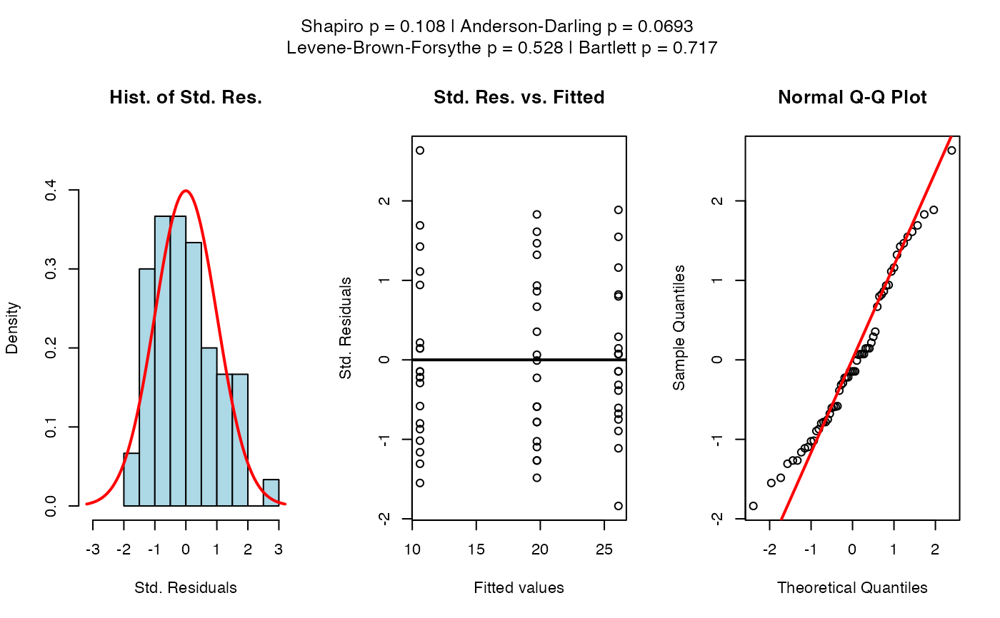

R/vis_anova_assumptions.R
vis_anova_assumptions.RdChecks for normality of the standardised residuals in ANOVA or regression. Performs the Shapiro-Wilk test and Anderson-Darling test for normality and, if not a regression, also the Levene-Brown-Forsythe and the Bartlett's test for homogeneity of variances. It produces a histogram with normal overlay, a residuals vs fitted plot, and a normal Q-Q plot.
vis_anova_assumptions(
samples,
fact,
conf.level = 0.95,
cex = 1,
regression = FALSE
)Numeric vector; the dependent variable.
Factor; the independent variable.
Numeric; confidence level for the tests (default: 0.95).
Numeric; scaling factor for plot text and symbols (default: 1).
Logical; if TRUE, skips Bartlett's test (for regression diagnostics). Default is FALSE.
A list with elements:
Summary of the ANOVA model.
Result from shapiro.test().
Result from nortest::ad.test() or a character message if n < 7.
Result from levene.test() (only if regression = FALSE).
Result from bartlett.test() (only if regression = FALSE).
ToothGrowth$dose <- as.factor(ToothGrowth$dose)
vis_anova_assumptions(ToothGrowth$len, ToothGrowth$dose)

#> $summary_anova
#> Df Sum Sq Mean Sq F value Pr(>F)
#> fact 2 2426 1213 67.42 9.53e-16 ***
#> Residuals 57 1026 18
#> ---
#> Signif. codes: 0 ‘***’ 0.001 ‘**’ 0.01 ‘*’ 0.05 ‘.’ 0.1 ‘ ’ 1
#>
#> $shapiro_test
#>
#> Shapiro-Wilk normality test
#>
#> data: std_residuals
#> W = 0.96731, p-value = 0.1076
#>
#>
#> $ad_test
#>
#> Anderson-Darling normality test
#>
#> data: std_residuals
#> A = 0.68679, p-value = 0.06928
#>
#>
#> $levene_test
#>
#> Levene-Brown-Forsythe Test (center = median)
#>
#> data: absolute deviations from group medians (for ANOVA on spread differences)
#> F = 0.64573, df1 = 2, df2 = 57, p-value = 0.5281
#>
#>
#> $bartlett_test
#>
#> Bartlett test of homogeneity of variances
#>
#> data: samples by fact
#> Bartlett's K-squared = 0.66547, df = 2, p-value = 0.717
#>
#>
#> attr(,"class")
#> [1] "vis_anova_assumptions"